Accessability Designs
"Small accessibility-focused UI/UX design projects that highlight various features aimed at enhancing clarity, usability, and an organized overview, ensuring an inclusive and seamless user experience for all."
 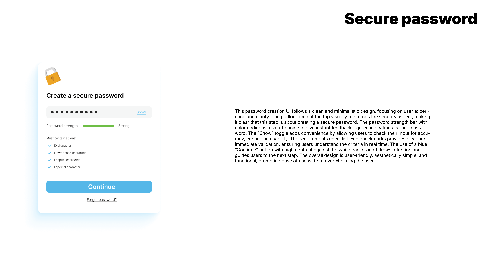
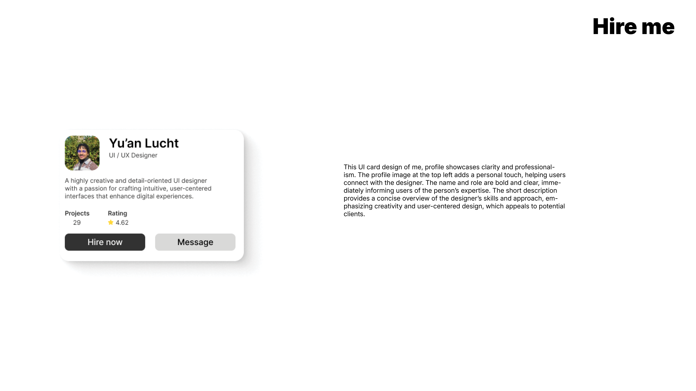
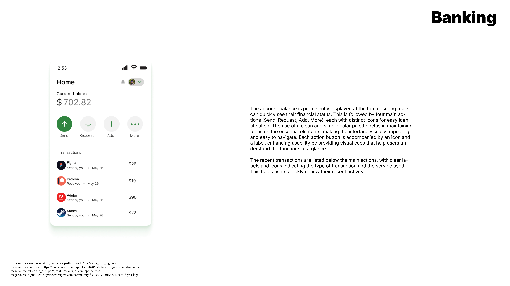
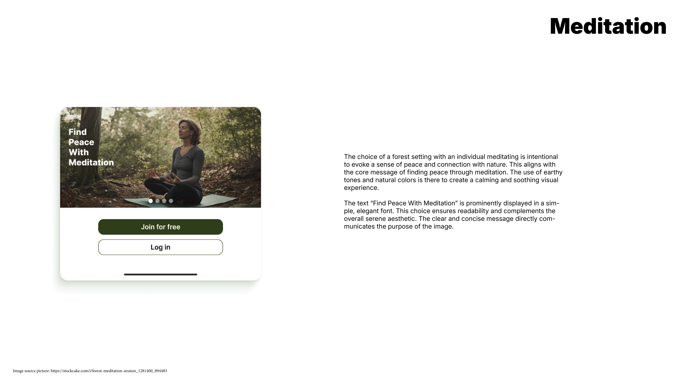
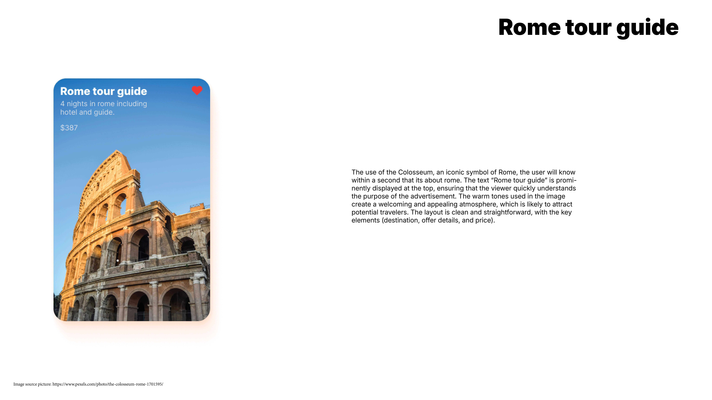
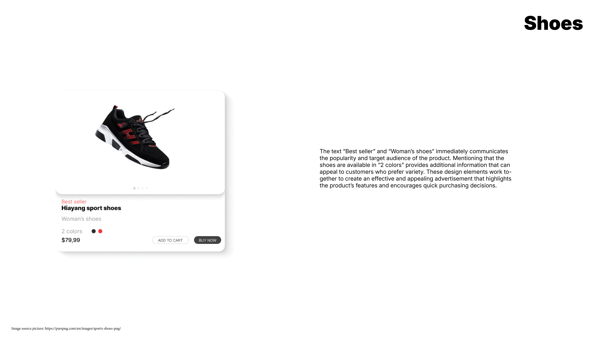
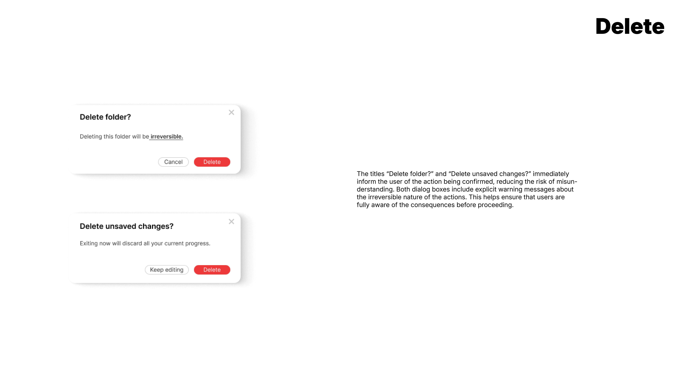
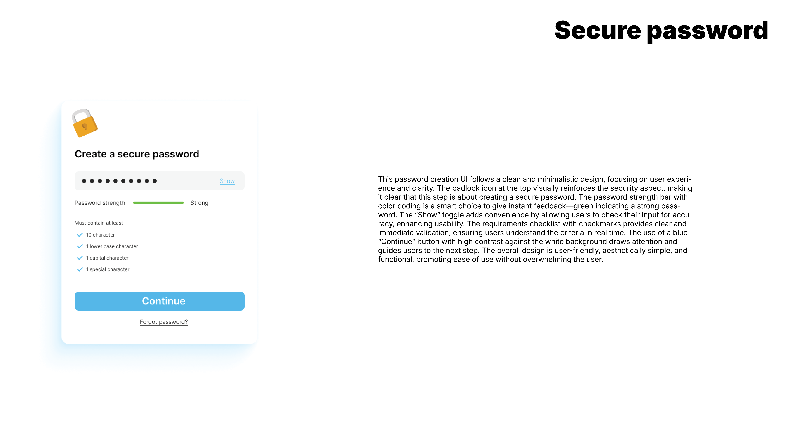
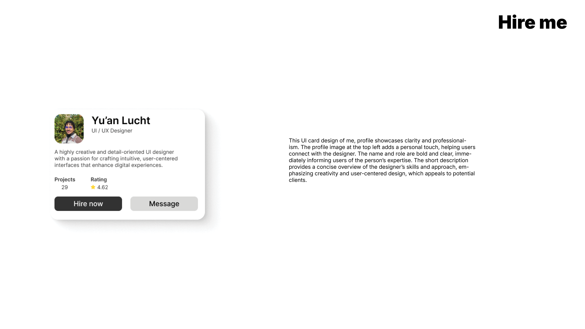
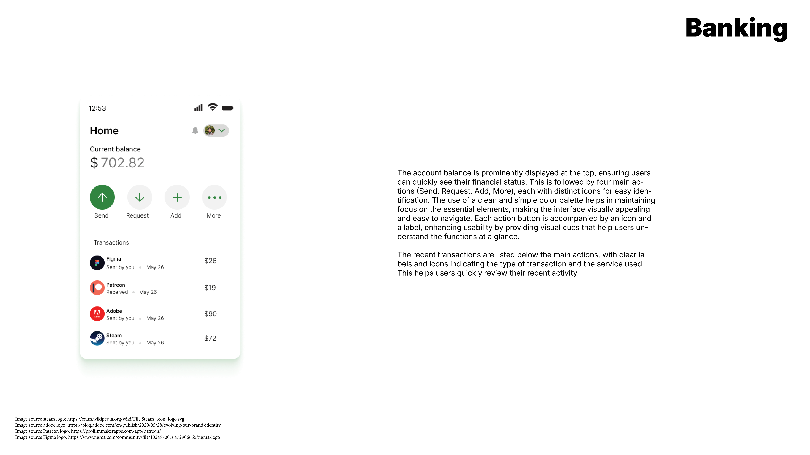
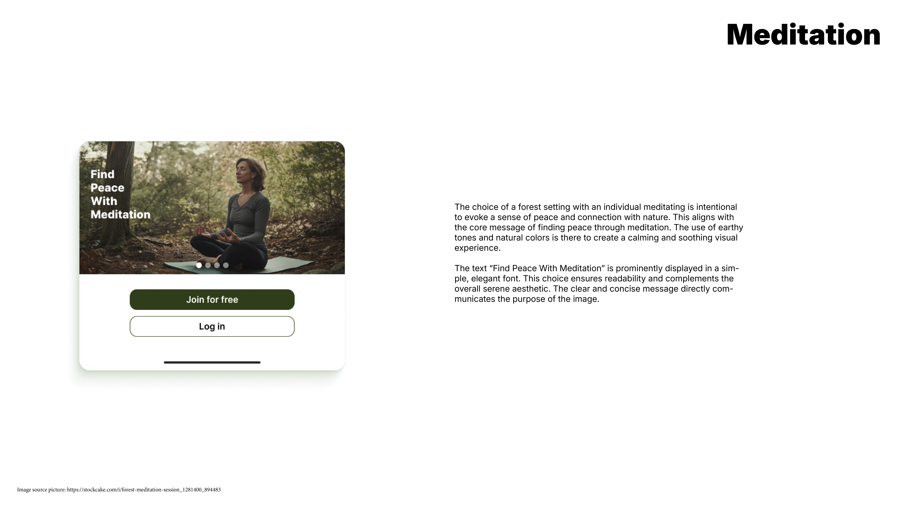
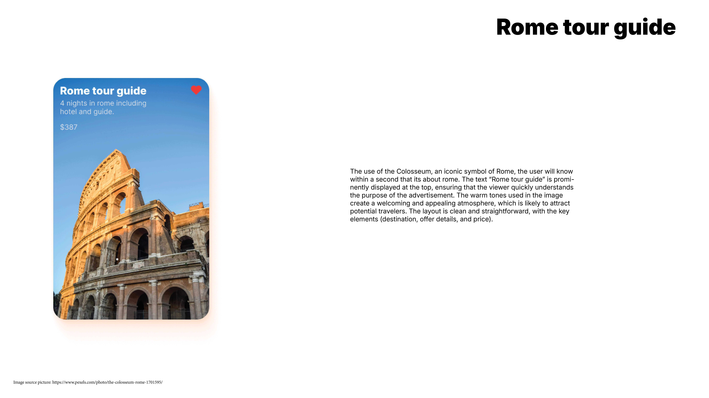
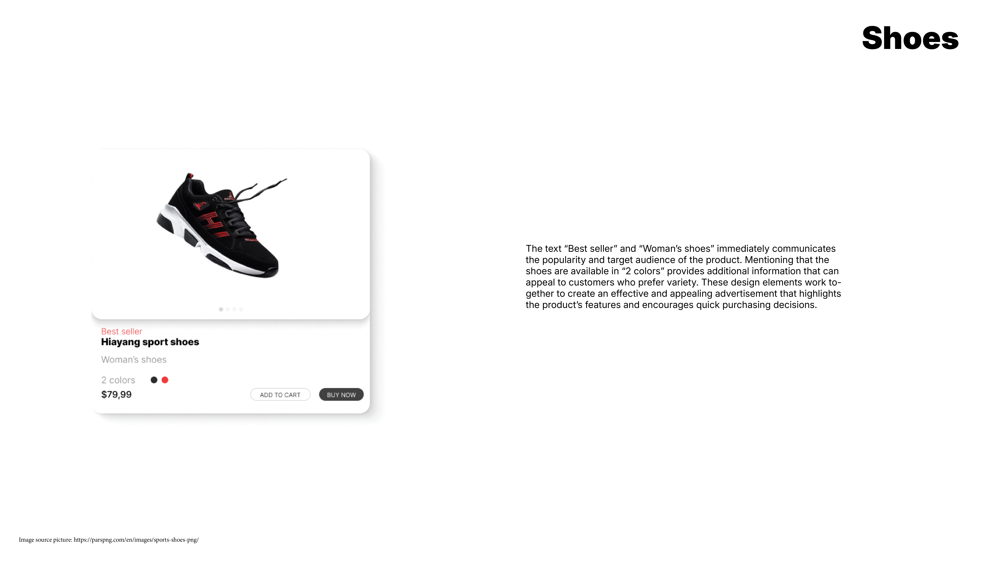
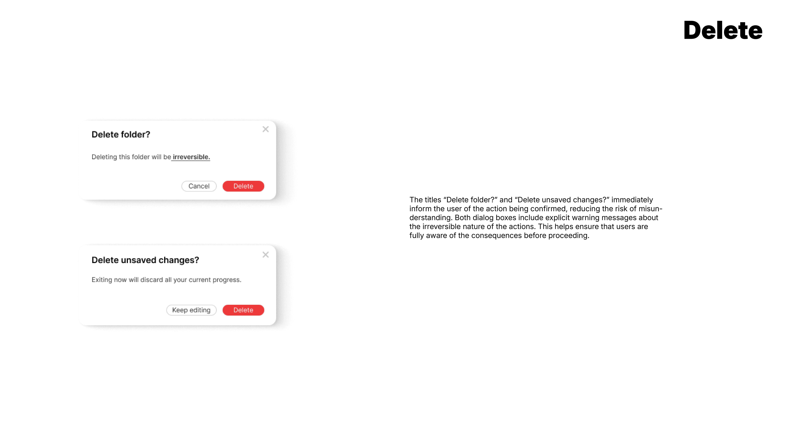